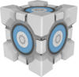
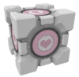
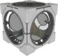
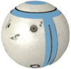
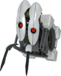
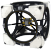
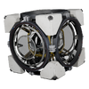
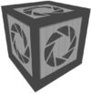
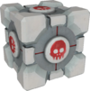

Cubes (Testkuben)
Gewichtete Speicherkuben, Begleiterkuben und Spezial-Varianten
„Das Enrichment Center erinnert Sie daran, dass der Gewichtete Begleiterkubus niemals drohen wird, Sie zu erstechen, und tatsächlich gar nicht sprechen kann.“ — GLaDOS, Test Chamber 17 (Portal)
Überblick
Cubes (Kuben) gehören zu den grundlegendsten Test-Elementen in Portal und Portal 2. Sie dienen in erster Linie dazu, Aperture Science Heavy Duty Super-Colliding Super Buttons (große Bodenschalter) dauerhaft gedrückt zu halten, um Türen zu öffnen oder Plattformen zu aktivieren.
Darüber hinaus können Kuben als Schutzschild gegen Geschütztürme (Turrets) verwendet, durch Portale transportiert oder mit Aperture-Gelen beschichtet werden. Wird ein Kubus durch einen Material Emancipation Grill getragen oder in Säure geworfen, löst er sich auf und wird automatisch über ein Rohrsystem (Vital Apparatus Vent) neu geliefert.
Die wichtigsten Kubus-Typen

Weighted Storage Cube
Der Standard-Kubus in allen Testkammern. Er leuchtet blau (inaktiv) oder orange (wenn er auf einem Bodenschalter liegt).

Weighted Companion Cube
Mit rosafarbenen Herzen verziert. Begleitet Chell durch Testkammer 17 in Portal, bevor er in der Notfall-Verbrennungsanlage entsorgt werden muss.

Redirection Cube (Laserkubus)
Eingeführt in Portal 2. Besitzt eingebaute Linsen und Spiegel, um tödliche Thermische Entmutigungsstrahlen (Laser) gezielt umzulenken.

Edgeless Safety Cube
Ein kugelförmiger „Kubus“ ohne Ecken, der wegrollen kann und speziell für runde Kugel-Fassungen gedacht ist.

Frankenturret
Eine von Wheatley erschaffene, fehlerhafte Kreuzung aus zwei Geschütztürmen und einem Speicherkubus, die unkontrolliert über den Boden hüpft.

Contraption Cube
Ein rustikaler Holzkubus mit Metallrahmen aus den alten Aperture-Science-Testbereichen der 1950er- bis 1980er-Jahre.
Spezial- & Community-Kuben
Neben den regulären Kampagnen-Kuben existieren noch besondere Varianten wie der Schrödinger Cube (für Quanten-Rätsel in Community-Modifikationen), der größenveränderbare Scalable Cube sowie der Skull Cube (eine düstere Variante mit Totenkopf-Symbol).

Schrödinger Cube
Spezialkubus aus Community-Mods, der mit quantenmechanischen Zuständen verknüpft ist.

Scalable Cube
Ein experimenteller Kubus, dessen Größe und Masse verändert werden können.

Skull Cube
Eine seltene Variante mit Totenkopf-Emblem anstelle des Aperture-Logos.